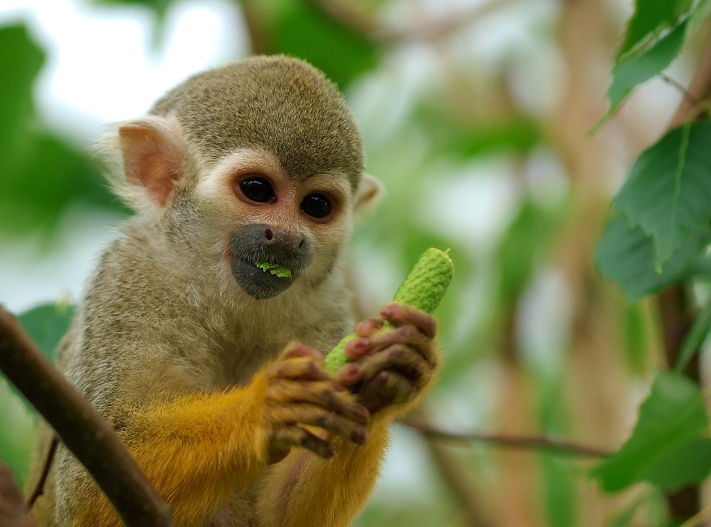

Body of squirrel monkeys is covered with fur that is mostly olive or grey in color. Their face, ears and throat are white. Mouths are black. Backs and extremities are covered with yellow-orange fur. Squirrel monkeys are small in size. Males are bigger than females. On average, they can reach 9.8 to 14 inches in height and 1.7 to 2.4 pounds in weight. Long tail of squirrel monkeys is not prehensile, but it provides balance when they move through the treetops. Squirrel monkeys are arboreal animals. They spend 99% of their lives in the trees. Squirrel monkeys have excellent eyesight and they are able to distinguish colors. This feature facilitates quick identification of fruit among dense vegetation. Squirrel monkeys are one of the most clever monkeys. They have very large brains in comparison to their body size. Squirrel monkeys live in large groups called "troops". A troop may consist of up to 500 members, but it is usually smaller, composed of 40 to 50 members. Communication inside the troop is accomplished through 25 to 30 different calls. Squirrel monkeys produced different sounds when they are searching for food, during the mating season and when they are threatened. Squirrel monkeys are omnivores. They eat different types of flowers, leaves, buds, nuts, insects, lizards and eggs. Due to their small size, squirrel monkeys are easy prey of birds of prey and snakes. Squirrel monkeys can survive 15 years in the wild and 20 years in captivity.
Source here
Squirrel Monkey
 Read More